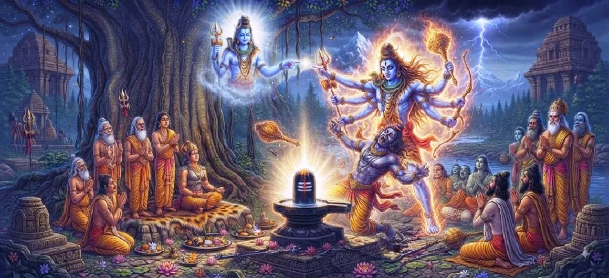

The Destruction of the Demon Bhima
The twenty-second chapter of the Kotirudra Samhita marks the dramatic conclusion of the struggle between the divine light of Bhimashankara and the dark tyranny of the demon Bhima.
It captures the climactic battle where righteousness finally overcomes arrogance, restoring peace to the world and establishing the glory of Lord Shiva.
This chapter serves as a profound testament to the truth that evil is transient and divine order is eternal.
Chapter 22 Highlights
The Final Conflict
The clash between the divine power of Shiva and the demon's ego.
Defeat of Arrogance
The inevitable end of the tyrant who defied the cosmic order.
Divine Triumph
The manifestation of Shiva's grace in the absolute defeat of evil.
Restoration of Peace
The world breathes a sigh of relief as justice is finally served.
Sacred Presence
Bhimashankara stands as a protector for all time to come.
Eternal Dharma
The victory reinforces that dharma always prevails in the end.
Core Topics in This Chapter
- 01The Climactic Battle→
- 02The Divine Power of Shiva→
- 03The Demon’s Inevitable Downfall→
- 04The Victory of Righteousness→
- 05Grace After the Conflict→
- 06The Restoration of Cosmic Order→
- 07The Significance of Bhimashankara→
- 08Blessings for the Devotees→
- 09A Lesson on the Nature of Ego→
- 10Transition to Chapter 23→
The Climactic Battle
The chapter vividly describes the final confrontation, where the forces of darkness confront the radiant, unwavering power of Lord Shiva.
It is a struggle where every action of the demon meets the unstoppable force of divine justice.
The Divine Power of Shiva
The narrative highlights the overwhelming majesty of Shiva, showing that true power lies in purity and purpose, not mere force.
His presence alone is enough to shake the foundations of tyranny.
The Demon’s Inevitable Downfall
As the battle progresses, the demon’s pride is systematically broken by the divine will of the Lord.
His destruction becomes a necessary correction to the imbalance he created.
The Victory of Righteousness
With the end of the tyrant, righteousness is re-established, and the world is freed from the shadow of fear.
The triumph is complete and absolute.
Grace After the Conflict
Following the destruction, the Lord’s grace envelopes the world, bringing solace and restoration to those who suffered.
The atmosphere of peace begins to heal the wounds of the past struggle.
The Restoration of Cosmic Order
The cosmic order, disrupted by the demon's ego, is perfectly aligned once again through the divine intervention of Bhimashankara.
Harmony is restored to all three worlds.
The Significance of Bhimashankara
The site of the victory becomes a permanent sanctified space, where the power of Shiva continues to protect all devotees.
It serves as an eternal reminder of the Lord’s protective grace.
Blessings for the Devotees
The chapter emphasizes that those who seek refuge in Bhimashankara are forever shielded from the darkness of ignorance and ego.
They find true peace and divine guidance.
A Lesson on the Nature of Ego
The destruction of Bhima is a lesson to all on the transient and ultimately self-destructive nature of spiritual arrogance.
Humility and devotion are the keys to avoiding such a fate.
Transition to Chapter 23
With the demon destroyed and balance restored, the narrative now shifts to celebrate the profound importance of this sacred Jyotirlinga.
Readers are invited to explore the glory of this site in Chapter 23, The Greatness of Bhimashankara Jyotirlinga.
Key Teachings of Chapter 22
Truth Always Prevails
Righteousness eventually overcomes any degree of tyranny or evil.
Ego is Self-Destructive
Spiritual arrogance inevitably leads to its own ruin.
Shiva’s Protection
The Divine is the ultimate guardian of the righteous order.
Peace follows Justice
True peace is only possible when justice is upheld and evil is removed.
Eternal Legacy
Divine interventions create landmarks of grace that benefit all future generations.
Humility Saves
A humble heart is sheltered by the Lord's protective grace.
Spiritual Reflection
The destruction of the demon Bhima is not merely a tale of victory, but a profound reflection on the nature of our own inner battles. Whenever ego, arrogance, or selfishness threatens to cloud our judgment, we must remember the power of Bhimashankara to clear the path. By surrendering our ego at the feet of the Lord, we participate in the triumph of light, ensuring that our lives are governed by truth and divine order rather than the transient desires of the self.
Living the Message of Chapter 22
Cultivate inner awareness to recognize when ego is gaining control, and consciously shift focus toward devotion and humility.
Act as an instrument of divine order, ensuring your deeds contribute to peace and harmony rather than conflict and division.
Always remember that the light of the Divine is stronger than any darkness, providing security and guidance through every challenge.
Key Spiritual Concepts
The absolute triumph of righteous order over chaotic ego.
The corrective power of the Lord that removes impediments to growth.
The understanding that tyranny, no matter how powerful, is temporary.
Sites of divine victory that remain sources of grace for seekers.
The essential virtue that prevents spiritual ruin and fosters devotion.
The balanced state of existence maintained by the Lord’s grace.
Chapter Summary
Kotirudra Samhita Chapter 22 chronicles the final battle between the radiant power of Bhimashankara and the tyrant Bhima, ending in the demon's total destruction and the restoration of dharma. This chapter serves as a profound affirmation of truth, justice, and the eternal protective grace of Lord Shiva, setting the stage for celebrating the glory of this sacred site in Chapter 23.
Frequently Asked Questions
1. What is the primary event in Kotirudra Samhita Chapter 22?
Chapter 22 recounts the climactic confrontation where Lord Shiva, in his form as Bhimashankara, destroys the demon Bhima, effectively ending his tyranny and restoring peace.
2. How is the triumph over the demon Bhima significant?
It symbolizes the absolute victory of divine truth and righteous order over arrogant ego and destructive tyranny, reinforcing the inevitability of justice.
3. What role does Bhimashankara play in this chapter?
Bhimashankara acts as the divine instrument of justice, showcasing the power of Shiva to eliminate evil and provide sanctuary to the righteous.
4. How does this chapter conclude the conflict?
The conflict concludes with the annihilation of the demon and the establishment of the Jyotirlinga, marking the permanent triumph of dharma.
5. What follows the destruction of the demon?
Following the destruction, the narrative shifts to the glory and significance of the site, detailed in Chapter 23, 'The Greatness of Bhimashankara Jyotirlinga'.
6. What spiritual message does the destruction of the demon hold?
It serves as a timeless reminder that spiritual ego, when detached from divine reality, will eventually meet its end in the light of the Lord.
“When the darkness of ego is consumed by the fire of divine justice, the eternal light of Shiva shines forth, restoring the world to order and peace.”
Continue Through Kotirudra Samhita
Chapter 22 explores the destruction of the demon Bhima. Continue to Chapter 23, The Greatness of Bhimashankara Jyotirlinga.